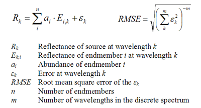
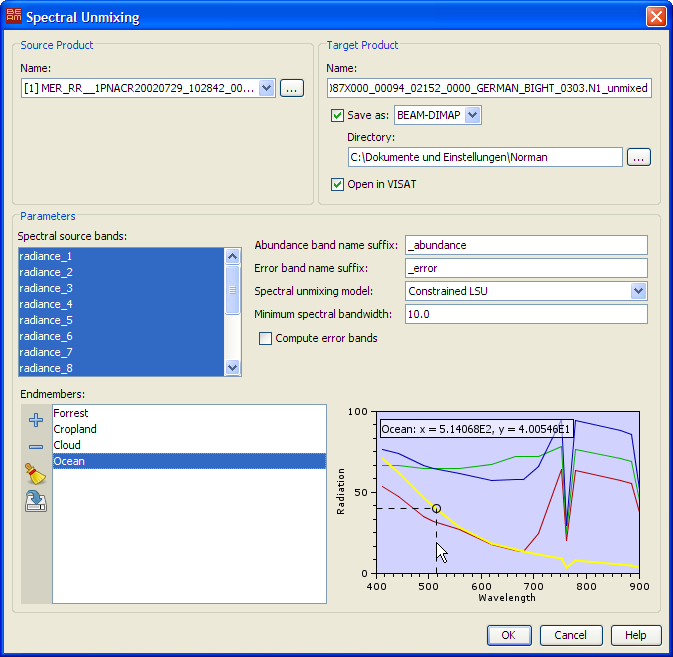

| Spectral Unmixing Tool | |
The spectral unmixing tool is used to decompose a reflectance (or corrected radiance) source spectrum into a set of given endmember spectra. The result of the unmixing is a measure of the membership of the individual endmember to the source spectrum. This measure is called the endmember's abundance. The tool can also compute an error measure for each spectral source band and a summary, root mean square error band.
The unmixing algorithms are based on the following linear mixing model, which assumes that a spectrum is a linear superposition of endmembers:

The abundances can be computed using three different algorithms:
- Unconstrained LSU - The abundances are unconstrained and can become any numeric value.
- Constrained LSU - The sum of abundances equals 1. This is the default unmixing algorithm.
- Fully Constrained LSU - The sum of abundances equals 1 and abundance values cannot be less than zero.
All algorithms assume that wavelengths are given in nanometers (BEAM's default wavelength unit).
The spectral unmixing tool can be invoked from VISAT's tool menu by selecting the Unmix command
or in batch mode by using the command line tool gpt (Graph Processing Tool) found
in BEAM's bin directory. Type gpt Unmix -h to get more information about
the usage of the Unmix operator.
The graphical user interface provided in VISAT appears as follows:

Name: Used to select the spectral source product. The source product shall contain spectral bands providing a source spectrum at each pixel. Use the ... button to open a data product currently not opened in VISAT.
Name: Used to specify the name of the target product.
Save to: Used to specify whether the target product should be saved to the file system. The combo box presents a list of file formats, currently BEAM-DIMAP, GeoTIFF, and HDF5.
Open in VISAT: Used to specify whether the target product should be opened in VISAT. When the the target product is not saved, it is opened in VISAT automatically.
Spectral source bands: Used to select the spectral source bands providing a source spectrum at each pixel.
Abundance band name suffix: Provides a name suffix for the generated abundance bands. The suffix is appended to the endmember name.
Error band name suffix: Provides a name suffix for the generated error bands (if any). The suffix is appended to the spectral source band name.
Spectral unmixing model: Selects one the linear unmixing algorithms as described above.
Minimum spectral bandwidth: The minimum spectral bandwidth is used find a source band wavelength within the given endmember spectra. An enmember wavelength matches a source wavelength if its deviation is within the maximum of the source band's inherent bandwidth and the minimum spectral bandwidth. The value is given in nanometers.
Compute error bands: Error bands are computed only if this option is selected.
Endmembers: Lists the endmembers to be used for the unmixing. The tool buttons to the left of the list field are used to modify the list of endmembers. They are:
Add Opens a text file containing endmembers in character separated format (CSV) and adds all endmembers found to the list. The CSV format is described below. Remove Removes the selected endmember(s) from the list. Clear Removes all endmembers from the list. Export Exports the endmembers in the list to a CSV text file.
Next to the endmember list is a spectrum diagram which is used to provide a visual feedback about the endmembers selected so far. The graph of the endmember selected in the list is displayed bold. You can drag the mouse in the diagram in order to display the value of the selected spectrum graph at the current cursor position (see screenshot above).
The CSV format used to import and export endmembers is a plain text format. It comprises a header line and a record line for each wavelengths and reflectances (or corrected radiances) of the of the endmember spectra. The Tab character is used to separate header and record fields. The first header field is assumed to be the wavelength in nanometers. Given here is an example of the contents of a CSV endmember file:
Wavelength Forrest Cropland Cloud Ocean 412.691 53.62759 66.19122 76.46195 70.6823 442.559 47.280907 66.45199 73.67296 61.99853 489.882 35.135273 64.50155 66.50564 46.74277